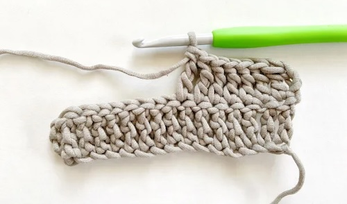

Crochet is a craft where yarn or thread is interlocked using a single hooked needle to create fabric. By making a foundation chain and working various stitches—like single, double, half double, and treble crochet—crafters build up rows of fabric with different textures and heights. This technique is versatile, allowing the creation of items such as blankets, garments, and accessories. Crochet projects can range from simple to complex, and the choice of yarn and hook size influences the final result.
Tapestry crochet involves using multiple colors in a single row to create intricate patterns and designs. By working over the unused yarn to carry it along the back of the piece, you achieve complex, colorful patterns without changing yarn frequently. It’s commonly used for creating geometric designs and detailed motifs in items like bags and blankets.
Mosaic crochet uses a combination of two or more colors, typically changing colors every few rows or rounds. By working with slip stitches and half double crochets, you create patterns with contrasting colors that appear as if they are woven into the fabric. This technique is ideal for creating bold, graphic designs with a striking visual effect.
Intarsia crochet involves working with separate yarn sections to create distinct blocks of color within a piece. Each color section is worked with its own yarn, and the yarns are twisted together at color changes to avoid gaps. This technique is perfect for creating large, detailed images or patterns, such as pictures or motifs.
A basic, tight stitch where you insert the hook into the stitch, yarn over, pull up a loop, yarn over again, and pull through both loops on the hook. It creates a dense, sturdy fabric.
A taller stitch where you yarn over before inserting the hook into the stitch, yarn over again to pull up a loop, yarn over and pull through the first two loops, then yarn over again to pull through the remaining two loops. It creates a more open and airy fabric than single crochet.

A tall stitch where you yarn over twice before inserting the hook into the stitch, yarn over and pull up a loop, yarn over and pull through two loops three times. It creates a very tall and open fabric, great for lacy patterns.
This stitch is between single and double crochet in height. Yarn over, insert the hook into the stitch, yarn over again to pull up a loop, yarn over once more and pull through all three loops on the hook. It creates a medium-height, textured fabric.
A variation of single crochet that creates a slightly taller, textured stitch. Insert the hook into the stitch, yarn over and pull up a loop, then yarn over and pull through just the first loop on the hook, followed by yarn over and pulling through both loops. It produces a fabric with a bit more height and texture than standard single crochet.
Acrylic yarn is a synthetic fiber that is lightweight, durable, and easy to care for. It is available in a vast array of colors and is often more affordable than natural fibers. Acrylic is resistant to mildew and fading, making it a popular choice for beginners and for projects that require machine washing, like blankets and toys.
Wool yarn is a natural fiber derived from sheep, known for its warmth, elasticity, and breathability. It can be slightly more expensive than synthetic yarns but offers excellent insulation, making it ideal for cozy garments and accessories. Wool also has natural moisture-wicking properties and can be dyed in vibrant colors.
Cotton yarn is a natural fiber that is soft, breathable, and highly absorbent. It has a smooth texture, making it perfect for summer garments, dishcloths, and home decor items. While cotton doesn’t have the stretch of wool, it holds its shape well and is available in a variety of weights and colors.
Bamboo yarn is made from the cellulose of the bamboo plant, offering a silky texture and natural sheen. It is soft, breathable, and has antibacterial properties, making it a great choice for lightweight garments and baby items. Bamboo yarn drapes beautifully but can be prone to stretching.
Alpaca yarn is made from the fleece of alpacas and is known for its exceptional warmth and softness. It is lightweight, hypoallergenic, and has a luxurious feel, making it ideal for high-end garments and accessories. Alpaca yarn comes in various natural colors and is often blended with other fibers for added durability.
Silk yarn is derived from the cocoons of silkworms and is prized for its luxurious texture and natural luster. It drapes beautifully and has a unique sheen, making it perfect for elegant garments and accessories. Silk yarn can be blended with other fibers to enhance its durability and versatility.